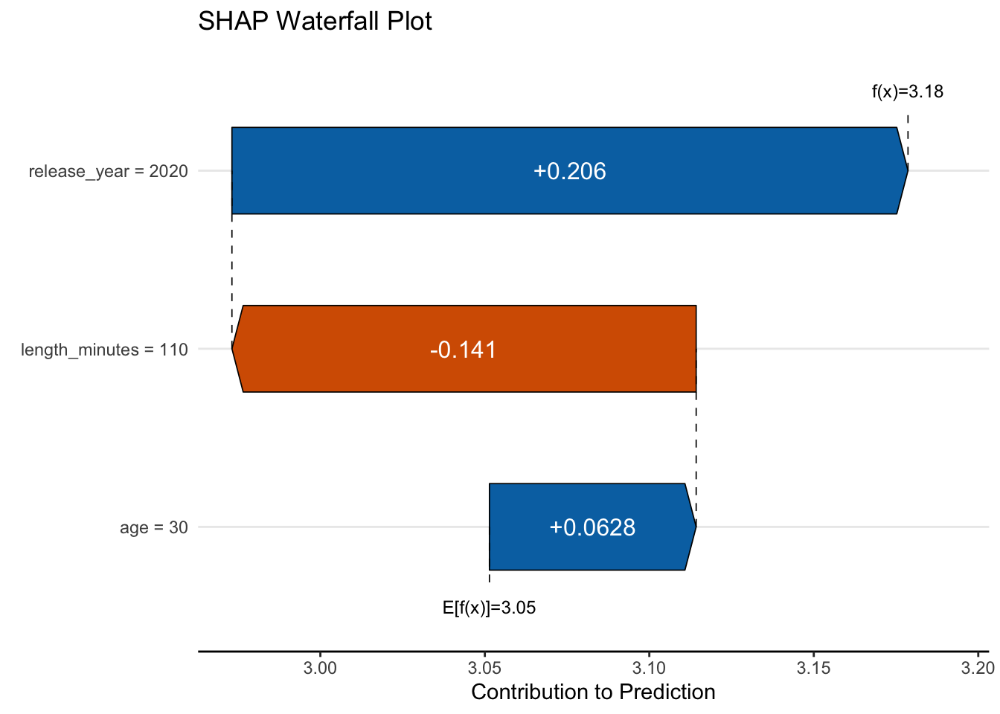

# all data found on github repo
df_reviews = read_csv('https://tinyurl.com/moviereviewsdata')
set.seed(123)
initial_split = sample(
x = 1:nrow(df_reviews),
size = nrow(df_reviews) * .75,
replace = FALSE
)
df_train = df_reviews[initial_split, ]
df_test = df_reviews[-initial_split, ]
model_lr_train = lm(
rating ~
review_year_0
+ release_year_0
+ age_sc
+ length_minutes_sc
+ total_reviews_sc
+ word_count_sc
+ genre
,
df_train
)
model_class_train = glm(
rating_good ~
review_year_0
+ release_year_0
+ age_sc
+ length_minutes_sc
+ total_reviews_sc
+ word_count_sc
+ genre
,
df_train,
family = binomial
)5 Understanding the Features
Assuming our model is adequate, let’s now turn our attention to the features. There’s a lot to unpack here, so let’s get started!
5.1 Key Ideas
- There are many ways to get to know your features, and though it can be challenging, it can also be very rewarding!
- Visualizations can help you understand how your model is making predictions and which features are important.
- Feature importance is difficult to determine even in the simplest of model settings, but there are tools to help you understand how much each feature contributes to a prediction.
5.1.1 Why this matters
We often need to, or simply want to know why our predictions come about. What’s driving them? What happens for specific observations? By exploring the features we can begin to better understand our model, and potentially improve it. We can also get a sense of what’s important in our data, and what’s not, and this can help us make better decisions.
5.1.2 Helpful context
We’d suggest having the linear model basics down pretty well, as much of what we explore here can be understood most easily in that setting. If you already have machine learning models down too, you’re in good shape, as this can all apply in those modeling contexts as well. We’ll be using the same data as we did in the previous chapters, so if you’re following along, you should be good to go.
5.2 Data Setup
We’ll use the movie review data as with our previous chapters. Later on, we’ll also use the world happiness data set to explore some more advanced concepts. For the movie review data, we’ll split the data into training and testing sets, and then fit a linear regression model and a logistic regression model to the training data. We’ll then use the testing data to evaluate the models.
import pandas as pd
import numpy as np
import statsmodels.api as sm
import statsmodels.formula.api as smf
from sklearn.model_selection import train_test_split
# all data found on github repo
df_reviews = pd.read_csv('https://tinyurl.com/moviereviewsdata')
df_train, df_test = train_test_split(
df_reviews,
test_size = 0.25,
random_state = 123
)
# we'll use this later
features = [
"review_year_0",
"release_year_0",
"age_sc",
"length_minutes_sc",
"total_reviews_sc",
"word_count_sc",
"genre",
]
model = 'rating ~ ' + " + ".join(features)
model_lr_train = smf.ols(formula = model, data = df_train).fit()
model = 'rating_good ~ ' + " + ".join(features)
model_class_train = smf.glm(
formula = model,
data = df_train,
family = sm.families.Binomial()
).fit()5.3 Basic model parameters
We saw in the linear model chapter (3.4.1) that we can get a lot out of the basic output from standard linear models. Our starting point should be the coefficients or weights, which can give us a sense of the direction and magnitude of the relationship between the feature and the target given their respective scales. We can also look at the standard errors and confidence intervals to get a sense of the uncertainty in those estimates. Here is a basic summary of the coefficients for our regression model on the training data.
| feature | estimate | std_error | statistic | p_value | conf_low | conf_high |
|---|---|---|---|---|---|---|
| intercept | 2.44 | 0.08 | 32.29 | 0.00 | 2.29 | 2.59 |
| review_year_0 | 0.01 | 0.00 | 2.65 | 0.01 | 0.00 | 0.01 |
| release_year_0 | 0.01 | 0.00 | 5.29 | 0.00 | 0.01 | 0.01 |
| age_sc | −0.05 | 0.02 | −3.21 | 0.00 | −0.09 | −0.02 |
| length_minutes_sc | 0.19 | 0.02 | 10.40 | 0.00 | 0.15 | 0.22 |
| total_reviews_sc | 0.26 | 0.02 | 14.43 | 0.00 | 0.22 | 0.30 |
| word_count_sc | −0.12 | 0.02 | −6.94 | 0.00 | −0.15 | −0.08 |
| genreComedy | 0.53 | 0.06 | 8.26 | 0.00 | 0.40 | 0.65 |
| genreDrama | 0.58 | 0.04 | 13.50 | 0.00 | 0.50 | 0.67 |
| genreHorror | 0.00 | 0.08 | 0.03 | 0.98 | −0.16 | 0.16 |
| genreKids | 0.07 | 0.07 | 1.05 | 0.30 | −0.06 | 0.20 |
| genreOther | 0.03 | 0.07 | 0.36 | 0.72 | −0.12 | 0.17 |
| genreRomance | 0.07 | 0.07 | 1.05 | 0.30 | −0.06 | 0.21 |
| genreSci-Fi | −0.01 | 0.08 | −0.17 | 0.87 | −0.18 | 0.15 |
We also noted how we can get a bit more relative comparison by using standardized coefficients, or some other scaling of the coefficients that allows for a bit of a more apples-to-apples comparison. But as we’ll see, in the real world even if we have just apples, there are fuji, gala, granny smith, honeycrisp, and many other kinds, and some may be good for snacks, others for baking pies, some are good for cider, etc. In other words, there is no one size fits all approach to understanding how a feature contributes to understanding the target, and the sooner you grasp that, the better.
5.4 Feature Contributions
We can also look at the contribution of a feature to the model’s explanatory power, namely through its predictions. To start our discussion, we don’t want to lean too heavily on the phrase feature importance yet, because as we’ll see later, trying to rank features by an importance metric is difficult at best, and a misguided endeavor at worst. We can however look at the feature contribution to the model’s predictions, and we can come to a conclusion about whether we think a feature is practically important, but just we need to be careful about how we do it.
Truly understanding feature contribution is a bit more complicated than just looking at the coefficient if we’re using any model that isn’t a linear regression, and there are many ways to go about it. We know we can’t compare raw coefficients across features, because they are on different scales. But even when we put them on the same scale, it may be very easy for some features to move, e.g., one standard deviation, and very hard for others. Binary features can only be on or off, while numeric features can move around more, but numeric features may also be highly skewed. We also can’t use statistical significance based on p-values, because they reflect sample size as much or more than effect size.
So what are we to do? What you need to know to get started looking at a feature’s contribution includes the following:
- feature range and variability
- feature distributions (e.g., skewness)
- representative values of the feature
- target range and variability
- feature interactions and correlations
We can’t necessarily do a whole lot about these aspects, but we can at least be aware of them to help us understand any effects we want to explore. And just as importantly, knowing this sort of information can help us be aware of the limitations of our understanding of these effects. In any case, let’s try to get a sense of how we can understand the contribution of a feature to our model.
5.5 Marginal Effects
One way to understand the contribution of a feature to the model is to look at the marginal effect of the feature, which conceptually attempts to boil a feature effect to something simple like an average. Unfortunately, not everyone means the same thing when they use this term and it can be a bit confusing. Marginal effects typically refer to a partial derivative of the target with respect to the feature. Oh no! Math! However, as an example, this becomes very simple for standard linear models with no interactions and all linear effects, as in linear regression. The derivative of our coefficient with respect to the feature is just the coefficient itself! But for more complicated models, even just a classification model like our logistic regression, we need to do a bit more work to get the marginal effect, or other so-called average effects. Let’s think about a couple common versions:
- Average slope, Average Marginal Effect
- Marginal effect at the mean
- Marginal Means (for categorical features)
- Counterfactuals and other predictions at key feature values
5.5.1 Marginal effects at the mean
First let’s think about an average slope. This is the average of the slopes across the feature’s values, or values of another feature it interacts with. To begin, let’s just look at the effect of word count first, and we’ll do this for the logistic regression model to make things more interesting. A good question to start with is, how do we visualize the relationship/effect?
Here are two plots, and both are useful, neither is inherently wrong, and yet they both tell us something different. The first plot shows the predicted probability of a good review as word count changes, with all other features at their mean (or mode for categorical features like genre). We can see that on the probability scale, this relationship is negative with a bit of a curve that gets steeper with higher word count values.

The second plot shows what is called a partial dependence plot, which shows the average predicted probability of a good review as word count changes. In both cases we make predictions with imputed values- the left plot imputes the other features to be their mean or mode, while the right plot leaves the other features at their actual values, and then, using a range of values for word count, gets a prediction as if every observation had that value for word count. We then plot the average of the predictions for each value in the range.
Let’s demystify this by calculating it ourselves.
df_typical = tibble(
genre = names(which.max(table(df_train$genre))),
age_sc = mean(df_train$age_sc),
release_year_0 = mean(df_train$release_year_0),
length_minutes_sc = mean(df_train$length_minutes_sc),
total_reviews_sc = mean(df_train$total_reviews_sc),
word_count_sc = mean(df_train$word_count_sc),
review_year_0 = mean(df_train$review_year_0)
)
# avg prediction when everything is typical
avg_pred = predict(model_class_train, newdata = df_typical, type = "response") |>
mean()
# avg prediction when word count is at its mean
avg_pred_0 = predict(
model_class_train,
newdata = df_train |> mutate(word_count_sc = 0),
type = 'response'
) |>
mean()
c(avg_pred, avg_pred_0)df_typical = pd.DataFrame({
"genre": df_train.genre.mode().values,
"age_sc": df_train.age_sc.mean(),
"release_year_0": df_train.release_year_0.mean(),
"length_minutes_sc": df_train.length_minutes_sc.mean(),
"total_reviews_sc": df_train.total_reviews_sc.mean(),
"word_count_sc": df_train.word_count_sc.mean(),
"review_year_0": df_train.review_year_0.mean()
})
# avg prediction when everything is typical
avg_pred_typical = model_class_train.predict(df_typical).mean()
# avg prediction when word count is at its mean
avg_pred_0 = model_class_train.predict(
df_train.assign(word_count_sc = 0)
).mean()
avg_pred_typical.round(3), avg_pred_0.round(3)When word count is zero, i.e., its mean, and everything else is at its mean/mode, we’d predict a chance of a good review at about 82%. As such, we interpret this as ‘when everything is typical’, we have a pretty good chance of getting a good review. The average prediction we’d get if we predicted every observation as if it were the mean word count is more like 57%, which is notably less. Which is correct? Both, or neither! They are telling us different things, either of which may be useful, or not. If it’s doubtful that the feature values used in the calculation are realistic (e.g., everything at its mean at the same time, or an average word count when length of a movie is at its minimum), then they may both be misleading. You have to know your features and your target to know how best to use the information.
5.5.2 Average marginal effects
Let’s say we want to boil our understanding of the feature-target relationship to a single number. In this case, the coefficient is fine if we’re dealing with an entirely linear model. In this classification case, the raw coefficient tells us what we need to know, but on the log odds scale, which is not very intuitive for most folks. We can understand the probability scale, but this means things get nonlinear. As an example, a .1 to .2 change in the probability is doubling it, while a .8 to .9 change is a 12.5% increase in the probability. But is there any way we can stick with probabilities and get a single value to understand the change in the probability of a good review as word count changes by 1 unit?
Yes! We can look at what’s called the average marginal effect of word count. This is the average of the slope of the predicted probability of a good review as word count changes. This is a bit more complicated than just looking at the coefficient, but it’s still intuitive, and more so than a coefficient that regards odds. How do we get it? By a neat little trick where we predict the target with the feature at two values. We start with the observed value and then add or subtract a very small amount. Then we take the difference in the predictions for those two feature values. This results in the same thing as taking the derivative of the target with respect to the feature.
fudge_factor = 1e-3
fudge_plus = predict(
model_class_train,
newdata = df_train |> mutate(word_count_sc = word_count_sc + fudge_factor/2),
type = "response"
)
fudge_minus = predict(
model_class_train,
newdata = df_train |> mutate(word_count_sc = word_count_sc - fudge_factor/2),
type = "response"
)
# compare
# mean(fudge_plus - fudge_minus) / fudge_factor
marginaleffects::avg_slopes(
model_class_train,
variables = "word_count_sc",
type = 'response'
)
Term Estimate Std. Error z Pr(>|z|) S 2.5 % 97.5 %
word_count_sc -0.105 0.0155 -6.74 <0.001 35.8 -0.135 -0.0742
Columns: term, estimate, std.error, statistic, p.value, s.value, conf.low, conf.high
Type: response fudge_factor = 1e-3
fudge_plus = model_class_train.predict(
df_train.assign(
word_count_sc = df_train.word_count_sc + fudge_factor/2
)
)
fudge_minus = model_class_train.predict(
df_train.assign(
word_count_sc = df_train.word_count_sc - fudge_factor/2
)
)
np.mean(fudge_plus - fudge_minus) / fudge_factor-0.09447284318194568
# note that the marginaleffects is available in Python, but still very fresh!
# we'll add a comparison in the future, but it doesn't handle models
# with categoricals right now.
# import marginaleffects as me
# me.avg_slopes(model_class_train, variables = "word_count_sc")Our result suggests we’re getting about a -0.1 drop in the expected probability of a good review for a 1 standard deviation increase in word count on average. This is a bit more intuitive than the coefficient or odds ratio based on it, and we probably don’t want to ignore that sort of change. It also doesn’t take much to get with the right package, or even on our own. Another nice thing about this approach is that it can potentially be applied to any model, including ones that don’t normally produce coefficients, like gradient boosting models or deep learning models.
5.5.3 Marginal means
Marginal means are just about getting an average prediction for the levels of categorical features. As an example, we can get the average predicted probability of a good review for each level of the genre feature, and then compare them. To do this we just have to make predictions as if every observation had a certain value for genre, and then average the predictions. This is also the exact same approach that produced the PDP for word count we saw earlier.
marginal_means = map_df(
unique(df_train$genre),
~ tibble(
genre = .x,
avg_pred = predict(
model_class_train,
newdata = df_train |>
mutate(genre = .x),
type = "link"
) |>
mean() |> # get the average log odds then transform
plogis()
)
)
# marginal_means
marginaleffects::avg_predictions(model_class_train, newdata = df_train, variables = "genre")inv_logit = lambda x: 1 / (1 + np.exp(-x))
marginal_means = pd.DataFrame({
"genre": df_train.genre.unique(),
"avg_pred": [
inv_logit(model_class_train.predict(df_train.assign(genre = g), which='linear')).mean()
for g in df_train.genre.unique()
]
})
marginal_means| genre | estimate | conf.low | conf.high |
|---|---|---|---|
| Comedy | 0.85 | 0.72 | 0.92 |
| Drama | 0.82 | 0.76 | 0.87 |
| Action/Adventure | 0.38 | 0.31 | 0.46 |
| Horror | 0.37 | 0.22 | 0.56 |
| Sci-Fi | 0.45 | 0.26 | 0.64 |
| Romance | 0.49 | 0.33 | 0.65 |
| Other | 0.39 | 0.24 | 0.55 |
| Kids | 0.41 | 0.27 | 0.57 |
| Select output from the R package marginaleffects. | |||
These results suggest that we can expect a good review for comedy and drama, maybe not so much for the others, on average. It also seems that our probability of a good review is similar for Comedy and Drama, and the others kind of group together as well.
5.6 Counterfactual Predictions
The nice thing about having a model is that we can make predictions for any set of feature values we want to explore. This is a great way to understand the contribution of a feature to the model. We can make predictions for a range of feature values, and then compare the predictions to see how much the feature contributes to the model. Counterfactual predictions allow us to ask “what if?” questions of our model, and see how it responds. As an example, we can get a prediction as if every review was made for a drama, and then see what we’d expect if every review pertained to a comedy. This is a very powerful approach, and often utilized in causal inference, but it’s also a great way to understand the contribution of a feature to a model in general.
Consider an experimental setting where we have lots of control over how the data is produced for different scenarios. Ideally we’d be able to look at the same instances under when everything about them was identical, but in one case, the instance was part of the control group, and in another, part of the treatment group. Unfortunately, not only is it impossible to have everything be identical, but it’s also impossible to have the same instance be in two experimental group settings at the same time! Counterfactual predictions are the next best thing though, because once we have a model, we can predict an observation as if it was in the treatment, and then when it is a control. If we do this for all observations, we can get a sense of the average treatment effect, one of the main points of interest in causal inference.
But you don’t need an experiment for this. In fact, we’ve been doing this all along with our marginal effects examples. Take the marginal means, where we looked at the average predicted probability of a good review as if every observation was a specific genre. We could have also looked at any specific observation’s predictions to compare the two genre settings, instead of getting an average. This is very much in the spirit of a counterfactual prediction.
Let’s try a new data set to help drive the point home. We’ll use some data at the global stage- the world happiness data set (Section D.2). For our model we’ll predict the happiness score for a country, considering freedom to make life choices, GDP and other things associated with it. We’ll then switch the freedom to make life choices and GDP values for the US and Russia, and see how the predictions change!
# data available on repo (full link in appendix)
df_happiness_2018 = read_csv('https://tinyurl.com/worldhappiness2018')
model_happiness = lm(
happiness_score ~
log_gdp_per_capita
+ healthy_life_expectancy_at_birth
+ generosity
+ freedom_to_make_life_choices
+ confidence_in_national_government,
data = df_happiness_2018
)
df_us_russia = df_happiness_2018 |>
filter(country %in% c('United States', 'Russia'))
happiness_gdp_freedom_values = df_us_russia |>
arrange(country) |>
select(log_gdp_per_capita, freedom_to_make_life_choices)
base_predictions = predict(
model_happiness,
newdata = df_us_russia
)
# switch up their GDP and freedom!
df_switch = df_us_russia |>
mutate(
log_gdp_per_capita = rev(log_gdp_per_capita),
freedom_to_make_life_choices = rev(freedom_to_make_life_choices)
)
switch_predictions = predict(
model_happiness,
newdata = df_switch
)
tibble(
country = c('Russia', 'USA'),
base_predictions,
switch_predictions
) |>
mutate(
diff_in_happiness = switch_predictions - base_predictions
)# data available on repo (full link in appendix)
df_happiness_2018 = pd.read_csv('https://tinyurl.com/worldhappiness2018')
model_happiness = smf.ols(
formula = 'happiness_score ~ \
log_gdp_per_capita \
+ healthy_life_expectancy_at_birth \
+ generosity \
+ freedom_to_make_life_choices \
+ confidence_in_national_government',
data = df_happiness_2018
).fit()
df_us_russia = df_happiness_2018[
df_happiness_2018.country.isin(['United States', 'Russia'])
]
happiness_gdp_freedom_values = df_happiness_2018.loc[
df_happiness_2018.country.isin(['United States', 'Russia']),
['log_gdp_per_capita', 'freedom_to_make_life_choices']
]
base_predictions = model_happiness.predict(df_us_russia)
# switch up their GDP and freedom!
df_switch = df_us_russia.copy()
df_switch[['log_gdp_per_capita', 'freedom_to_make_life_choices']] = (
df_switch[['log_gdp_per_capita', 'freedom_to_make_life_choices']].values[::-1]
)
switch_predictions = model_happiness.predict(df_switch)
pd.DataFrame({
'country': ['Russia', 'USA'],
'base_predictions': base_predictions,
'switch_predictions': switch_predictions,
'diff_in_happiness': switch_predictions - base_predictions
}).round(3)Here are the results in a clean table.
| country | base_predictions | switch_predictions | diff_in_happiness |
|---|---|---|---|
| Russia | 5.7 | 6.4 | 0.7 |
| United States | 6.8 | 6.1 | −0.7 |
In this case, we see that the happiness score is expected to be very lopsided in favor of the US, which our base prediction would suggest the US to be almost a full standard deviation higher in happiness than Russia given their current values (SD happiness ~1.1). But if the US was just a bit more like Russia, we’d see a significant drop even if it maintained its life expectancy, generosity, and faith in government. Likewise, if Russia was a bit more like the US, we’d expect to see a significant increase in their happiness score.
It’s very easy even with base package functions to see some very interesting things about our data and model. As an exercise, you might go back to the movie reviews data and see what happens if we switch the age of reviewer and length of a movie for a few observations. Counterfactual predictions get us thinking more explicitly about what the situation would be if things were much different, but in the end, we’re just playing around with predicted values and thinking about possibilities!
5.7 SHAP Values
As we’ve suggested, most models are more complicated than can be explained by a simple coefficient, for example, nonlinear effects in generalized additive models. Or, there may not even be feature-specific coefficients available, like gradient boosting models. Or, we may even have many parameters associated with a feature, as in deep learning. Such models typically won’t come with statistical output like standard errors and confidence intervals either. But we’ll still have some tricks up our sleeve to help us figure things out!
A very common interpretation tool is called a SHAP value. SHAP stands for SHapley Additive exPlanations, and it provides a means to understand how much each feature contributes to a specific prediction. It’s based on a concept from game theory called the Shapley value, which is a way to understand how much each player contributes to the outcome of a game. For our modeling context, SHAP values break down a prediction to show the impact of each feature. The reason we bring it up here is that it has a nice intuition in the linear model case, and seeing it in that context is a good way to get a sense of how it works. Furthermore, it builds on what we’ve been talking about with our various prediction approaches.
While the actual computations behind the scenes can be tedious, the basic idea is relatively straightforward- for a given prediction at a specific observation with set feature values, we can calculate the difference between the prediction at that observation versus the average prediction for the model as a whole. We can break this down for each feature, and see how much each contributes to the difference. This provides us the local effect of the feature, or how it plays out for a specific observation, as opposed to the whole data. The SHAP approach also has the benefit of being able to be applied to any model, whether a simple linear or deep learning model. Very cool! To demonstrate we’ll use the simple model from our model comparison demo in the previous chapter, but keep the features on the raw scale.
model_lr_3feat = lm(
rating ~
age
+ release_year
+ length_minutes,
data = df_reviews
)
# inspect if desired
# summary(model_lr_3feat)model_lr_3feat = smf.ols(
formula = 'rating ~ \
age \
+ release_year \
+ length_minutes',
data = df_reviews
).fit()
# inspect if desired
# model_lr_3feat.summary(slim = True)With our model in place let’s look at the SHAP values for the features. We’ll start by choosing the instance we want to explain. Here we’ll consider an observation where the release year is 2020, age of reviewer is 30, and a movie length of 110 minutes. To aid our understanding, we calculate the SHAP values at that observation by hand, and using a package. The by-hand approach consists of the following steps.
- Get the average prediction for the model
- Get the prediction for the feature at the value of interest for all observations, and average the predictions
- Calculate the SHAP value as the difference between the average prediction and the average prediction for the feature value of interest
Note that this approach only works for our simple linear regression case, and we’d need to use a package incorporating an appropriate method for more complicated settings. But this simplified approach helps get our bearings on what SHAP values tell us. Also, be aware that our focus is a feature’s marginal contribution at a single observation. Our coefficient already tells us the average contribution of a feature across all observations for this linear regression setting, i.e the average marginal effect discussed previously.
# first we need to get the average prediction
avg_pred = mean(predict(model_lr_3feat))
# observation of interest we want shap values for
obs_of_interest = tibble(
age = 30,
length_minutes = 110,
release_year = 2020
)
# then we need to get the prediction for the feature value of interest
# for all observations, and average them
pred_age_30 = predict(
model_lr_3feat,
newdata = df_reviews |> mutate(age = obs_of_interest$age)
)
pred_year_2022 = predict(
model_lr_3feat,
newdata = df_reviews |> mutate(release_year = obs_of_interest$release_year)
)
pred_length_110 = predict(
model_lr_3feat,
newdata = df_reviews |> mutate(length_minutes = obs_of_interest$length_minutes)
)
# then we can calculate the shap values
shap_value_ours = tibble(
age = mean(pred_age_30) - avg_pred,
release_year = mean(pred_year_2022) - avg_pred,
length_minutes = mean(pred_length_110) - avg_pred
)# first we need to get the average prediction
avg_pred = model_lr_3feat.predict(df_reviews).mean()
# observation of interest we want shap values for
obs_of_interest = pd.DataFrame({
'age': 30,
'release_year': 2020,
'length_minutes': 110
}, index = ['new_observation'])
# then we need to get the prediction for the feature value of interest
# for all observations, and average them
pred_age_30 = model_lr_3feat.predict(
df_reviews.assign(
age = obs_of_interest.loc['new_observation', 'age']
)
)
pred_year_2022 = model_lr_3feat.predict(
df_reviews.assign(
release_year = obs_of_interest.loc['new_observation', 'release_year']
)
)
pred_length_110 = model_lr_3feat.predict(
df_reviews.assign(
length_minutes = obs_of_interest.loc['new_observation', 'length_minutes']
)
)
# then we can calculate the shap values
shap_value_ours = pd.DataFrame({
'age': pred_age_30.mean() - avg_pred,
'release_year': pred_year_2022.mean() - avg_pred,
'length_minutes': pred_length_110.mean() - avg_pred
}, index = ['new_observation'])Now that we have our own part set up. We can use a package to do the work more formally, and compare the results.
# we'll use the DALEX package for this
explainer = DALEX::explain(model_lr_3feat, verbose = FALSE)
shap_value_package = DALEX::predict_parts(
explainer,
obs_of_interest,
type = 'shap'
)
rbind(
shap_value_ours,
shap_value_package[
c('age', 'release_year', 'length_minutes'),
'contribution'
]
)# now use the shap package for this; it does not work with statsmodels though,
# but we still get there in the end!
import shap
from sklearn.linear_model import LinearRegression
# set data up for shap and sklearn
fnames = [
'age',
'release_year',
'length_minutes'
]
X = df_reviews[fnames]
y = df_reviews['rating']
# use a linear model that works with shap
model_reviews = LinearRegression().fit(X, y)
# 1000 instances for use as the 'background distribution'
X_sample = shap.maskers.Independent(data = X, max_samples = 1000)
# # compute the SHAP values for the linear model
explainer = shap.Explainer(
model_reviews.predict,
X_sample
)
shap_values = explainer(obs_of_interest)
shap_value_package = pd.DataFrame(
shap_values.values[0, :],
index = fnames,
columns = ['new_observation']
).T
pd.concat([shap_value_ours, shap_value_package])The following table reveals that the results are identical.
| source | age | release_year | length_minutes |
|---|---|---|---|
| Ours | 0.063 | 0.206 | −0.141 |
| Package | 0.063 | 0.206 | −0.141 |
We can visualize these as well, via a force plot or waterfall plot, the latter of which is shown in the next plot. The dotted line at E[f(x)] represents the average prediction from our model (~3.05), and the prediction we have for the observation at f(x), which is about 3.18.
With the average prediction as our starting point, we add the SHAP values for each feature to get the prediction for the observation. First we add the SHAP value for age, which bumps the value by 0.063, then the SHAP value for movie length, which decreases the prediction -0.141, and finally the SHAP value for release year, which brings us to the final predicted value by increasing the prediction 0.206.

And there you have it- we’ve demystified the SHAP value! Things get more complicated in nonlinear settings, dealing with correlated features, and other cases, but hopefully this provides you some context. SHAP values are useful because they tell us how much each feature contributes to the prediction for the observation under consideration.
Pretty neat huh? So for any observation we want to inspect, and more importantly, for any model we might use, we can get a sense of how features contribute to that prediction. We also can get a sense of how much each feature contributes to the model as a whole by aggregating these values across all observations in our data, and this potentially provides a measure of feature importance, but we’ll come back to that in a bit.
5.8 Related Visualizations
We’ve seen how we can get some plots for predictions in different ways previously with what’s called a partial dependence plot (Figure 5.1). In essence, a PDP shows the average prediction of a feature on the target across the feature values. This is also what we were just doing to calculate our SHAP value, and for the linear case, the PDP has a direct correspondence to the SHAP. In this setting, the SHAP value is the difference between the average prediction and the point on the PDP for a feature at a specific feature value. As an example, for a movie of 110 minutes, the line in the plot below corresponds to the value in the previous waterfall plot (Figure 5.2).

We can also look at the individual conditional expectation (ICE) plot, which is a PDP for a single observation, but across all values of a select feature. By looking at several observations, as in the second plot, we can get a sense of the variability in the feature’s effect. As we can see, there is not much to tell beyond a PDP when we have a simple linear model, but it becomes more interesting when we have interactions or other nonlinear relationships in our model.
In addition, there are other plots that are similar to the PDP and ICE, such as the accumulated local effect (ALE) plot, shown last, which is more robust to correlated features than the PDP, while also showing the general feature-target relationship. Where the PDP and ICE plots show the average effect of a feature on the target, the ALE plot focuses on average differences in predictions for the feature at a specific value, versus predictions at feature values nearby, and then centers the result so that the average difference is zero. In general, all our plots reflect the positive linear relationship between movie length and rating.
5.9 Global Assessment of Feature Importance
Everything we’ve shown so far provides specific information about how a feature impacts a prediction for a specific observation. But more generally we often will ask - how important is a feature? It’s a common question, and one that is often asked of models, but the answer ranges from ‘it depends’ and ‘it doesn’t matter’. Let’s start with some hard facts:
- There is no single definition or metric of importance for any given model.
- There is no single metric for any model that will conclusively tell you how important a feature is relative to others in all data/model contexts.
- There are multiple metrics of importance for a given model that are equally valid, but which may come to different conclusions.
- Any non-zero feature contribution is potentially ‘important’, however small.
- Many metrics of importance fail to adequately capture interactions and/or deal with correlated features.
- All measures of importance are measured with uncertainty, and the uncertainty can be large.
- A question for feature importance is relative to… what? A poor model will still have relatively ‘important’ features, but they still may not be useful since the model itself isn’t.
- It rarely makes sense to drop features based on importance alone, and doing so will typically drop performance as well.
- In the end, what will you do with the information?
As we noted previously, if I want to know how a feature relates to a target, I have to know how a feature moves, and I need to know what types of feature values are more likely than others, and what a typical movement in its range of values would be. If a feature is skewed, then the mean may not be the best value to use for prediction, and basing ‘typical’ movement on its standard deviation may be misguided. If a unit movement in a feature results in a movement in the target of 2 units, what does that mean? Is it a large movement? If I don’t know the target very well, I can’t answer that. As an example, if the target is in dollars, a $2 movement is nothing for salary, but might be large for a stock price. We have to know the target as well as we do the feature predicting it.
On top of all this, we need to know how the feature interacts with other features. If a feature is highly correlated with another feature, then it may not be adding much to the model even if some metrics would indicate a notable contribution. In addition, some approaches will either spread the contribution of correlated features across them, or just pick one of them as being important to the model. It may be mostly arbitrary which one is included, or you might miss both if the importance values are split.
If a feature interacts with another feature, then there really is no way to say how much it contributes to the model without knowing the value of the other feature. Full stop. Synergistic effects cannot be understood by pretending they don’t exist. A number of metrics will still be provided for a single feature, either by trying to include its overall contribution or averaging over the values of the other feature. But this is a problematic approach because it still ignores the other feature values. As an example, if a drug doesn’t work for your age group or for someone with your specific health conditions, do you really care if it works ‘in general’ or ‘on average’?
To help us further understand this issue, consider the following two plots. On the left we show an interaction between two binary features. If we were to look at the contribution of each feature without the interaction, their respective coefficients would be estimated as essentially zero1. On the right we show a feature that has a strong relationship with the target, but only for a certain range of values. If we were to look at a single ‘effect’ of the feature, we would likely underestimate how strong it is with smaller values and overestimate the relationship at the upper range.

All this is to say, as we get into measures of feature importance, we need to be very careful about how we interpret and use them!
5.9.1 Example: Feature Importance for Linear Regression
To show just how difficult measuring feature importance is, we only have to stick with our simple linear regression. Think again about R2: it tells us the proportion of the target explained by our features. An ideal measure of importance would be able to tell us how much each feature contributes to that proportion, or in other words, one that decomposes R2 into the relative contributions of each feature. One of the most common measures of importance in linear models is the standardized coefficient we have demonstrated previously. You know what it doesn’t do? It doesn’t decompose R2 into relative feature contributions. Even the more complicated SHAP approach will not do this.
The easiest situation we could hope for with regard to feature importance is the basic linear regression model we’ve been using. Everything is linear, with no interactions or other things going on, as in our demonstration model. And yet there are many logical ways to determine feature importance. Some metrics even break down R2 into relative feature contributions, but they won’t necessarily agree with each other in ranking or relative differences. If you can get a measure of statistical difference between whatever metric you choose, it’s often the case that ‘top’ features will not be statistically different from other features. So what do we do? We’ll show a few methods here, but the main point is that there is no single answer, and it’s important to understand what you’re trying to do with the information.
Let’s start things off by using one of our previous linear regression models with several features, but which has no interactions or other complexity (Section 3.5.1). It’s just a model with simple linear relationships and nothing else. We even remove categorical features to avoid having to aggregate group effects. In short, it doesn’t get any easier than this!
model_importance = lm(
rating ~
word_count
+ age
+ review_year
+ release_year
+ length_minutes
+ children_in_home
+ total_reviews,
data = df_reviews
)model_importance = smf.ols(
formula = 'rating ~ \
word_count \
+ age \
+ review_year \
+ release_year \
+ length_minutes \
+ children_in_home \
+ total_reviews',
data = df_reviews
).fit()Our first metric available for us to use is just the raw coefficient value, but they aren’t comparable because the features are on very different scales- moving one unit in movie length is not the same as moving a unit in age. We can standardize them which helps in this regard, and you might start there.
Another approach we can use comes from the SHAP value, which, as we saw, provides a measure of contribution of a feature to the prediction. These can be positive or negative and are specific to the observation. But if we take the average absolute SHAP value for each feature, we can maybe get a sense of the typical contribution size for the features. We can then rank order them accordingly. Here we see that the most important features here are the number of reviews and the length of the movie. Note that we can’t speak to direction here, only magnitude. We can also see that word count is relatively less important.
Now here are some additional methods2. Some of these decompose R2 into the relative contributions to it from each feature (car, lmg, and pratt). The others do not (SHAP, permutation-based, standardized coefficient squared). On the left, values represent the proportion of the R2 value that is attributable to the feature- their sum is equal to the overall R2 = 0.32. These are in agreement for the most part and seem to think more highly of word count as a feature, but they aren’t actually the same value.
The others on the right suggest word count and age should rank lower, and length and review year higher. Which is best? Which is correct? Any of them. But by looking at a few of these, we can at least get a sense that total reviews, word count, release year, and length in minutes are probably useful features to our model, while age, review year, and children in the home are less so, at least in the context of the model we have.

All of the metrics shown have uncertainty in their estimate, and some packages make it easy to plot or extract. As an example one could bootstrap a metric, or use the permutations as a means to get at the uncertainty. However, the behavior and distribution of these metrics is not always well understood, and in some cases, the computation would often be notable (e.g., with SHAP). You could also look at the range of the ranks created by bootstrapping or permuting, and take the upper bound as the worst case for a given feature. Although this might possibly be conservative, the usual problem is that people are too optimistic about their feature importance result, so this might be a good thing.
The take home message is that in the best of circumstances, there is no automatic way of saying one feature is more important than another. It’s nice that we can use approaches like SHAP and permutation methods for more complicated models like boosting and deep learning models, but they’re not perfect, and they still suffer from most of the same issues as the linear model. In the end, understanding a feature’s role within a model is ultimately a matter of context, and highly dependent on what you’re trying to do with the information.
5.10 Feature Metrics for Classification
All of what’s been demonstrated for feature metrics applies to classification models, some of which were explicitly demonstrated. In general, counterfactual predictions, average marginal effects, SHAP, and permutation-based methods for feature importance would be done in the exact same way. The only real difference is the reference target - our results would be in terms of probabilities and using a different loss metric to determine importance, that sort of thing. But in general, everything we’ve talked about holds for both regression and binary classification settings as well.
5.11 Wrapping Up
It’s generally a good idea to look at which features are pulling the most weight in your model to better understand how predictions are being made. But it takes a lot of work to trust what a model is telling you.
5.11.1 The common thread
As with Chapter 4, much of what you’ve seen here applies to many modeling scenarios. In many settings we are interested in feature-level interpretation. This can take a statistical focus, or use tools that are more model-agnostic like SHAP. In these situations, we are usually interested in how the model is making its predictions, and how we can use that information to make better decisions.
5.11.2 Choose your own adventure
If you haven’t already, feel free to take your linear models further in Chapter 9 and Chapter 8, where you’ll see how to handle different distributions for your target, add interactions, nonlinear effects, and more. Otherwise, you’ve got enough at this point to try your hand at the Chapter 10 section, where you can dive into machine learning!
5.11.3 Additional resources
To get the most out of DaLEX visualizations, check out the authors’ book Explanatory Model Analysis.
We also recommend checking out Christoph Molnar’s book, Interpretable Machine Learning. It is a great resource for learning more about model explainers and how to use them, and provides a nice package that has a lot of the functionality we’ve shown here.
The marginal effects zoo, written by the marginaleffects package author, is your goto for getting started with marginal effects, but we also recommend the excellent blog post by Andrew Heiss as a very nifty overview and demonstration.
5.12 Guided Exploration
Let’s put our model understanding that we’ve garnered in this and the previous chapter to the test. You’ll use the world happiness data set.
- Start by creating a model of your choosing that predicts happiness score. This can be the one you did for the previous exercise (Section 3.10).
- Now create a simpler or more complex model for comparison. The simple model should just remove a feature, while the complex model should add features to your initial model.
- Interpret the first model as a whole, then compare it to the simpler/more complex model. Did anything change in how you assessed the features they have in common?
- Create a counterfactual prediction for an observation, either one from the observed data or one that is of interest to you.
- Choose the ‘best’ model, and justify your reason for doing so, e.g., using a specific metric of your choosing.
- As a bonus, get feature importance metrics for your chosen model. If using R, we suggest using the iml package (example), and in Python, run the linear regression with scikit-learn and use the permutation-based importance function.
library(iml)
model = model_happiness
y = df_happiness_2018$happiness_score
X = model$model[,-1] # if using lm -1 removes the happiness score
mod = Predictor$new(model, data = X, y = y)
# Compute feature importances as the performance drop in mean absolute error
imp = FeatureImp$new(mod, loss = "mse")
# Plot the results directly
plot(imp)from sklearn.linear_model import LinearRegression
from sklearn.inspection import permutation_importance
import pandas as pd
y = df_happiness_2018['happiness_score']
X = df_happiness_2018[[MY_FEATURES]]
model = LinearRegression().fit(X, y)
importance = permutation_importance(model, X, y, n_repeats=30, random_state=0)
(
pd.DataFrame(
importance.importances_mean,
index=X.columns
)
.sort_values(by=0, ascending=False)
.plot(kind='bar')
)To understand why, for the effect of Feature 1, just take the mean of the two points on the left vs. the mean of the two points on the right. It would basically be a straight line of no effect as you move from group 0 to group 1. For the effect of Feature 2, the two group means for A and B would be at the intersection of the two lines.↩︎
The car, lmg, pratt, and beta-squared values were provided by the relaimpo package in R. See the documentation there for details. Permutation based importance was provided by the iml package, though we supplied a custom function that returns the drop in R-squared value. SHAP values were calculated using the fastshap package. In python you can use the shap output, and sklearn has a permutation-based importance function as well.↩︎